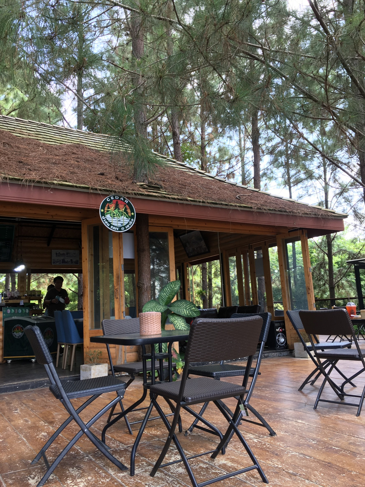
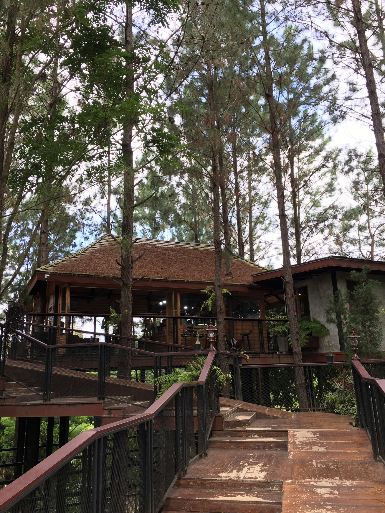
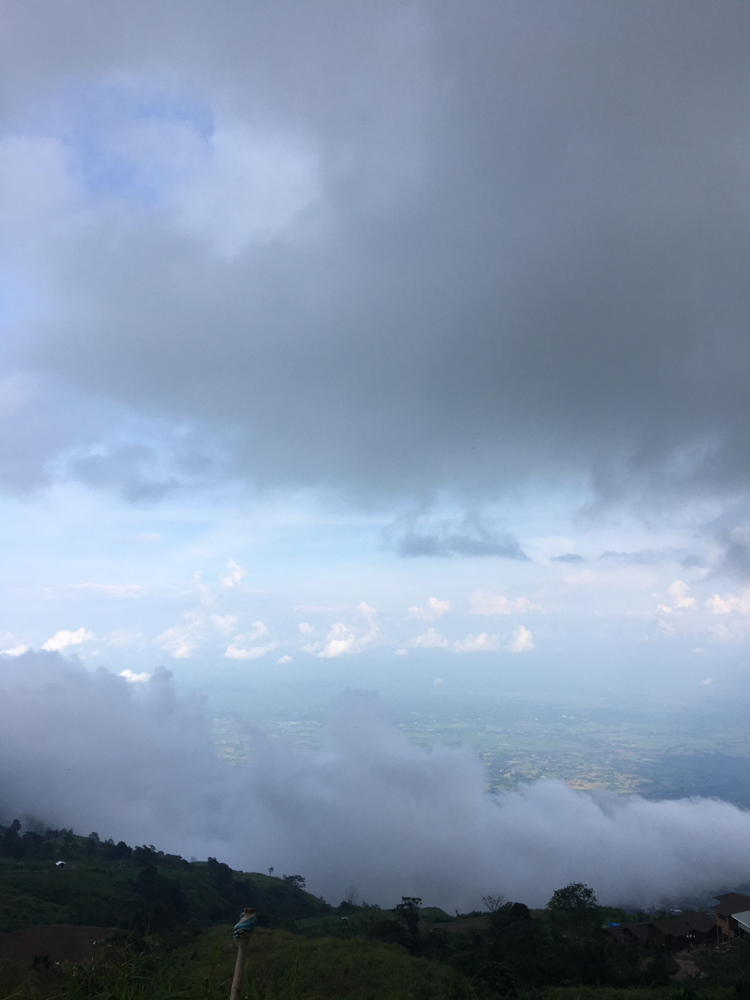
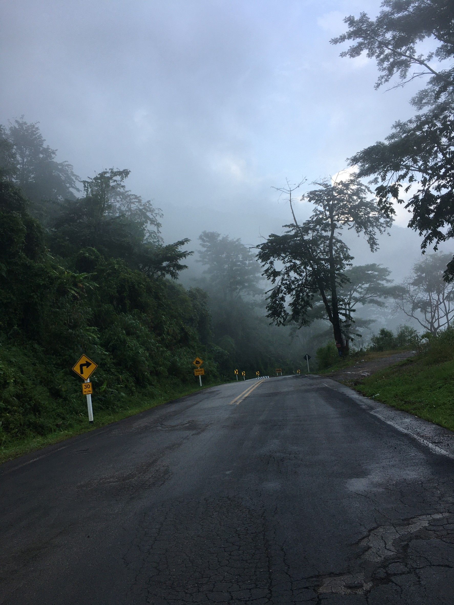

เขาค้อ
เขาค้อเป็นสถานที่ ที่หลายๆคนต้องรู้จักเมื่อนึกถึงเพชรบูรณ์ เป็นสถานที่ท่องเที่ยวยอดฮิตของคนไทย ในเขาค้อนั้นมีสถานที่ท่องเที่ยวมากมาย ร้านอาหารครบครัน เหมาะกับการพักผ่อนในวัดหยุดอย่างมาก ในวันนี้เราจะมานำเสนอสถานที่ท่องเที่ยวที่ใครชอบเขาค้อให้คนทุกคนรู้กัน
ร้านอาหารครบครัน เหมาะกับการพักผ่อนในวัดหยุดอย่างมาก ในวันนี้เราจะมานำเสนอสถานที่ท่องเที่ยวที่ใครชอบเขาค้อให้คนทุกคนรู้กัน
1. Cedar ป่าสน Cafe เขาค้อ
 Cedar ป่าสน Cafe เขาค้อ เป็นคาเฟ่ที่มีเอกลักษณ์มาก โดยคาเฟ่นี้ตั้งอยู่ในป่าสน เป็นคาเฟ่ที่มีบรรยากาศเย็นสบายได้ฟังเสียงของต้นสนที่โดนลมพัด มีสถานที่นั่งพักผ่อนพูดคุยกัน และยังมีสถานที่ให้ถ่ายรูปคูลกันอีกด้วย เป็นสถานที่ ที่ผมแนะนำให้ไปแวะกันเลยครับ
ช่องทางติดต่อ :
2. น้ำตกศรีดิษฐ์

ที่มา : https://wihok.com/photos/16
น้ำตกศรีดิษฐ์เป็นน้ำตกที่สวยงามของเขาค้อ เป็นน้ำตกที่มีน้ำไหลลงมาจากผาตัดและตกลงมา บริเวณข้างล่างน้ำตกก็มีที่เล่นน้ำ แต่ในหน้าฝนควรระมัดระวังเป็นพิเศษนะครับ ใครที่อยากใกล้ชิดธรรมชาติของเขาค้อแนะนำให้มาครับ
ช่องทางติดต่อ :
3. อุทยานแห่งชาติทุ่งสแลงหลวง

ที่มา : https://www.hellorainy.com
ใครอยากดื่มด่ำกับทุ่งสะวันนาแห่งเดียวของเมืองไทย ทุ่งแสลงหลวงตั้งอยู่ที่ตำบลหนองแม่นา อำเภอเขาค้อ ใกล้กับจังหวัดพิษณุโลก มีทั้งลำธาร ป่าสน กางเต็นท์กับสายหมอก โดยที่อากาศเย็นทั้งปี และมีสัตว์น้อยใหญ่คอยต้อนรับเสมอ บอกเลยคนสายกางเต็นท์ไม่ควรพลาดเลยนะครับ
ช่องทางติดต่อ :
ภูทับเบิก
 ภูทับเบิก เป็นยอดเขาที่สูงที่สุดในจังหวัดเพชรบูรณ์ มีความสูงจากระดับน้ำทะเลประมาณ 1,768 เมตร อยู่ตำบลวังบาล ห่างจากอำเภอหล่มสักและหล่มเก่าประมาณ 40 กิโลเมตร มีอากาศหนาวเย็นตลอดทั้งปี เป็นที่ตั้งของหมู่บ้านชาวไทยภูเขาเผ่าม้ง ซึ่งได้อพยพมาอาศัยอยู่ที่บ้านทับเบิก
ภูทับเบิกนั้นเหมาะกับคนที่ต้องการสูดบรรยากาศทะเลหมอกยามเช้า โดยบนภูทับเบิกนั้นมีทั้งสถานที่พักให้เช่า หรือ กางเต็นท์เองได้ แต่ทางขึ้นทับเบิกจะค่อนข้างขัน สำหรับคนขับรถไม่แข็งก็ต้องควรระมัดระวัง โดยเฉพาะหน้าฝนครับ
ช่องทางติดต่อ :
อุทยานแห่งชาติตาดหมอก


ที่มา : https://www.phetchabun.org
ที่มา : https://www.sanook.com/travel/1418477/
อุทยานแห่งชาติตาดหมอกเป็นอุทยานแห่งชาติที่ตั้งอยู่ในอำเภอเมืองเพชรบูรณ์ เมื่อเราเดินทางเข้าไปในอุทยานก็จะต้องซื้อบัตรเข้าอุทยานจากเจ้าหน้าที่ก่อน พอเราเข้าไปแล้วเราจะเจออย่างแรกคือลานชมดาว เป็นจุดที่สามารถกางเต้นท์ได้ตอนกลางคืนสามารถเห็นแสงไฟจากอำเภอเมืองเพชรบูรณ์ได้อย่างสวยงาม
ถ้าคนไหนอยากสัมผัสการเดินการเดินทางแนวแอดแวนเจอร์เดินป่า ขึ้นเขา ท่านต้องขับรถเข้าไปในอุทยานประมาณ 15 กิโลเมตรพอถึงแล้วจะเป็นทางตันให้เดินเท้าเข้าไปอีก 2 กิโลเมตรซึ่งเส้นทางจะทรหดมาก ถ้ามาหน้าฝนจะมีเจ้าหน้าที่พาเดิน ซึ่งปลายทางจะเจอน้ำตกตาดหมอกอันสวยงาม
ช่องทางติดต่อ :